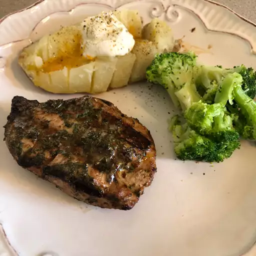

Marinated Tuna Steak

Description
This mixture of orange juice, soy sauce, and garlic gives this marinade a wonderful taste.
This marinade will make your tuna steak delicious!
Ingredients
- ¼ cup orange juice
- ¼ cup soy sauce
- 2 tablespoons olive oil
- 1 tablespoon lemon juice
- 2 tablespoons chopped fresh parsley
- 1 clove garlic, minced
- ½ teaspoon chopped fresh oregano
- ½ teaspoon ground black pepper
- 4 (4 ounce) tuna steaks